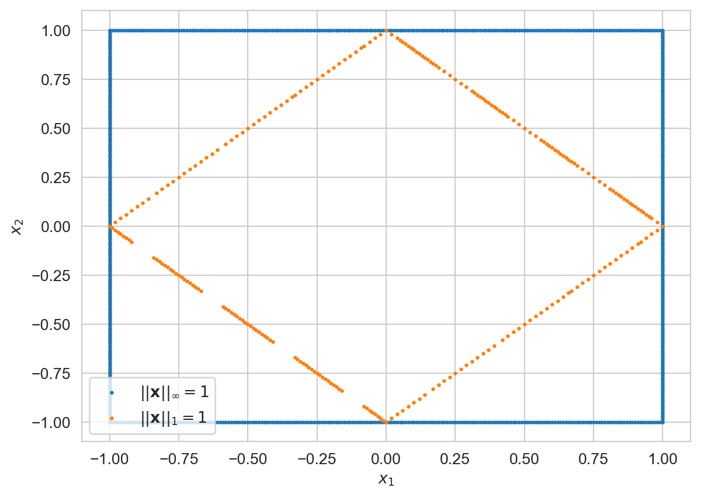

%load_ext itikzInner product
Consider geometric vectors \(\mathbf{x}, \mathbf{y} \in \mathbf{R}^2\). The scalar product(dot-product) of these two vectors is defined by:
\[ \mathbf{x} \cdot \mathbf{y} = x_1 y_1 + x_2 y_2 \]
An inner-product is a mathematical generalization of the dot-product.
\[ \newcommand{\norm}[1]{\left\lVert#1\right\rVert} \newcommand{\normp}[2]{\left\lVert\mathbf{#1}\right\rVert_{#2}} \newcommand\inner[2]{\left\langle #1, #2 \right\rangle} \newcommand{\bf}[1]{\mathbf{#1}} \newcommand{\R}{\mathbf{R}} \newcommand{\RR}[1]{\mathbf{R}^2} \newcommand{\RRR}[1]{\mathbf{R}^3} \newcommand{\C}{\mathbf{C}} \newcommand{\CC}[1]{\mathbf{C}^2} \newcommand{\CCC}[1]{\mathbf{C}^3} \]
Definition 1 (Inner product) Let \(V\) be a vector space and \(F\) be a scalar field, which is either \(\bf{R}\) or \(\bf{C}\). Let \(\inner{\cdot}{\cdot}\) be a map from \(V\times V \to F\). Then, \(\inner{\cdot}{\cdot}\) is an inner product if for all \(\bf{u},\bf{v}, \bf{w} \in V\), it satisfies:
Positive semi-definite
\[ \inner{\bf{v}}{\bf{v}} \geq 0 \quad \text { and } \quad \inner{\bf{v}}{\bf{v}} = 0 \Longleftrightarrow \bf{v} = \bf{0} \]
Additivity in the first slot
\[ \inner{\bf{u} + \bf{v}}{\bf{w}} = \inner{\bf{u}}{\bf{w}} + \inner{\bf{v}}{\bf{w}} \]
Homogeneity
\[ \begin{align*} \inner{\alpha \bf{v}}{\bf{w}} &= \overline{\alpha} \inner{\bf{v}}{\bf{w}}\\ \inner{\bf{v}}{\alpha \bf{w}} &= \alpha \inner{\bf{v}}{\bf{w}} \end{align*} \]
Conjugate symmetry
\[ \inner{\bf{v}}{\bf{w}} = \overline{\inner{\bf{w}}{\bf{v}}} \]
The most important example of inner-product is the Euclidean inner product on \(\C^n\). Let \(\bf{w},\bf{z}\) be (column) vectors in \(\C^n\).
\[ \inner{\bf{w}}{\bf{z}} = (\bf{w}^H \bf{z}) = \overline{w_1}z_1 + \overline{w_2}z_2 + \ldots + \overline{w_n} z_n \]
Firstly,
\[ \begin{align*} \inner{\bf{v} + \bf{w}}{\bf{z}} &= (\bf{v} + \bf{w})^H \bf{z} & \{ \text{ Definition }\}\\ &= (\bf{v}^H + \bf{w}^H)\bf{z} & \{ \overline{z_1 + z_2} = \overline{z_1} + \overline{z_2}; z_1,z_2\in \C \}\\ &= \bf{v}^H \bf{z} + \bf{w}^H \bf{z}\\ &= \inner{\bf{v}}{\bf{z}} + \inner{\bf{w}}{\bf{z}} \end{align*} \]
So, it is additive in the first slot.
Next, let \(\alpha \in \C\).
\[ \begin{align*} \inner{\alpha\bf{u}}{\bf{v}} &= (\alpha \bf{u})^H \bf{v} & \{ \text{ Definition }\}\\ &= \overline{\alpha} \bf{u}^H \bf{v} = \overline{\alpha} \inner{\bf{u}}{\bf{v}} \end{align*} \]
and
\[ \begin{align*} \inner{\bf{u}}{\alpha\bf{v}} &= (\bf{u})^H \bf{ \alpha v} & \{ \text{ Definition }\}\\ &= \alpha \bf{u}^H \bf{v} = \alpha \inner{\bf{u}}{\bf{v}} \end{align*} \]
It is homogenous.
Finally,
\[ \begin{align*} \inner{\bf{v}}{\bf{w}} &= \sum_{i=1}^n \overline{v_i}w_i\\ &= \sum_{i=1}^n \overline{v_i \overline{w_i}}\\ &= \overline{\left(\sum_{i=1}^n \overline{w_i} v_i\right)}\\ &= \overline{\inner{\bf{w}}{\bf{v}}} \end{align*} \]
Norms
Very often, to quantify errors or measure distances one needs to compute the magnitude(length) of a vector or a matrix. Norms are a mathematical generalization(abstraction) for length.
Definition 2 (Vector norm) Let \(\nu:V \to \mathbf{R}\). Then, \(\nu\) is a (vector) norm if for all \(\mathbf{x},\mathbf{y}\in V\) and for all \(\alpha \in \mathbf{C}\), \(\nu(\cdot)\) satisfies:
Positive Semi-Definiteness
\[\nu(\mathbf{x}) \geq 0, \quad \forall \bf{x}\in V\]
and
\[\nu(\mathbf{x})=0 \Longleftrightarrow \mathbf{x}=\mathbf{0}\]
Homogeneity
\[\nu(\alpha \mathbf{x}) = |\alpha|\nu(\mathbf{x})\]
Triangle inequality
\[\nu(\mathbf{x} + \mathbf{y}) \leq \nu(\mathbf{x}) + \nu(\mathbf{y})\]
The vector \(2-\)norm
The length of a vector is most commonly measured by the square root of the sum of the squares of the components of the vector, also known as the euclidean norm.
Definition 3 (Vector \(2-\)norm) The vector \(2-\) norm, \(||\cdot||:\mathbf{C}^n \to \mathbf{R}\) is defined for \(\mathbf{x}\in\mathbf{C}^n\) by:
\[ \norm{\bf{x}}_2 = \sqrt{|\chi_1|^2 + |\chi_2|^2 + |\chi_n|^2} = \sqrt{\sum_{i=1}^n |\chi_i^2|} \]
Equivalently, it can be defined as:
\[ \norm{\bf{x}}_2 = \sqrt{\inner{\bf{x}}{\bf{x}}} = (\bf{x}^H \bf{x})^{1/2} = \sqrt{\overline{\chi_1}\chi_1 +\overline{\chi_2}\chi_2+\ldots+\overline{\chi_n}\chi_n} \]
To prove that the vector \(2-\)norm is indeed a valid norm(just calling it a norm, doesn’t mean it is, after all), we need a result known as the Cauchy-Schwarz inequality. This inequality relates the magnitude of the dot-product(inner-product) of two vectors to the product of their two norms : if \(\bf{x},\bf{y} \in \R^n\), then \(|\bf{x}^T \bf{y}|\leq \norm{\bf{x}}_2\cdot\norm{\bf{y}}_2\).
Before we rigorously prove this result, let’s review the idea of orthogonality.
Definition 4 (Orthogonal vectors) Two vectors \(\bf{u},\bf{v} \in V\) are said to be orthogonal to each other if and only if their inner product equals zero:
\[ \inner{\bf{u}}{\bf{v}} = 0 \]
Theorem 1 (Pythagorean Theorem) If \(\bf{u}\) and \(\bf{v}\) are orthogonal vectors, then
\[ \inner{\bf{u} + \bf{v}}{\bf{u} + \bf{v}} = \inner{\bf{u}}{\bf{u}} + \inner{\bf{v}}{\bf{v}} \]
Proof.
We have:
\[ \begin{align*} \inner{\bf{u} + \bf{v}}{\bf{u}+\bf{v}} &= \inner{\bf{u}}{\bf{u} + \bf{v}} + \inner{\bf{v}}{\bf{u} + \bf{v}} & \{ \text{ Additivity in the first slot }\}\\ &= \overline{\inner{\bf{u} + \bf{v}}{\bf{u}}} + \overline{\inner{\bf{u} + \bf{v}}{\bf{v}}} & \{ \text{ Conjugate symmetry }\}\\ &= \overline{\inner{\bf{u}}{\bf{u}}} + \overline{\inner{\bf{v}}{\bf{u}}} + \overline{\inner{\bf{u}}{\bf{v}}} + \overline{\inner{\bf{v}}{\bf{v}}} \\ &= \inner{\bf{u}}{\bf{u}} + \inner{\bf{u}}{\bf{v}} + \inner{\bf{v}}{\bf{u}} + \inner{\bf{v}}{\bf{v}} \\ &= \inner{\bf{u}}{\bf{u}} + 0 + 0 + \inner{\bf{v}}{\bf{v}} & \{ \bf{u} \perp \bf{v}\}\\ &= \inner{\bf{u}}{\bf{u}} + \inner{\bf{v}}{\bf{v}} \end{align*} \]
This closes the proof. \(\blacksquare\)
In the special case that \(V=\C^n\) or \(V=\R^n\), the pythagorean theorem reduces to:
\[ \norm{\bf{u} + \bf{v}}_2^2 = \norm{\bf{u}}_2^2 + \norm{\bf{v}}_2^2 \]
Cauchy-Schwarz Inequality
Suppose \(\bf{u},\bf{v}\in V\). We would like to write \(\bf{u}\) as a scalar multiple of \(\bf{v}\) plus a vector \(\bf{w}\) orthogonal to \(\bf{v}\), as suggested in the picture below. Intuitively, we would like to write an orthogonal decomposition of \(\bf{u}\).
Show the code
%%itikz --temp-dir --tex-packages=tikz --tikz-libraries=arrows,arrows.meta --implicit-standalone
\begin{tikzpicture}[scale=2.0]
\draw [-{Stealth[length=5mm]}](0.0,0.0) -- (7,0);
\draw [-{Stealth[length=5mm]}] (0.0,0.0) -- (7,4);
\node [] at (3.5,2.25) {\large $\mathbf{u}$};
\draw [dashed] (7,0) -- (7,4);
\node [circle,fill,minimum size = 0.5mm] at (5,0) {};
\node [] at (5,-0.40) {\large $\mathbf{v}$};
\node [] at (7,-0.40) {\large $\alpha\mathbf{v}$};
\node [] at (7.4,2.0) {\large $\mathbf{w}$};
\end{tikzpicture}
To discover how to write \(\bf{u}\) as a scalar multiple of \(\bf{v}\) plus a vector orthogonal to \(\bf{v}\), let \(\alpha\) denote a scalar. Then,
\[ \bf{u} = \alpha \bf{v} + (\bf{u} - \alpha \bf{v}) \]
Thus, we need to choose \(\alpha\) so that \(\bf{v}\) and \(\bf{w} = \bf{u} - \alpha{v}\) are mutually orthogonal. Thus, we must set:
\[ \inner{\bf{u} - \alpha\bf{v}}{\bf{v}} = \inner{\bf{u}}{\bf{v}} - \alpha \inner{\bf{v}}{\bf{v}} = 0 \]
The equation above shows that we choose \(\alpha\) to be \(\inner{\bf{u}}{\bf{v}}/\inner{\bf{v}}{\bf{v}}\) (assume that \(\bf{v} \neq \bf{0}\) to avoid division by 0). Making this choice of \(\alpha\), we can write:
\[ \bf{u} = \frac{\inner{\bf{u}}{\bf{v}}}{\inner{\bf{v}}{\bf{v}}}\bf{v} + \left(\bf{u} - \frac{\inner{\bf{u}}{\bf{v}}}{\inner{\bf{v}}{\bf{v}}}\bf{v}\right) \tag{1}\]
The equation above will be used in the proof the Cauchy-Schwarz inequality, one of the most important inequalities in mathematics
Theorem 2 (Cauchy-Schwarz Inequality) Let \(\bf{x},\bf{y}\in V\). Then
\[ |\inner{\bf{u}}{\bf{v}}|^2 \leq \inner{\bf{u}}{\bf{u}}\inner{\bf{v}}{\bf{v}} \tag{2}\]
Proof.
Let \(\bf{u},\bf{v} \in V\). If \(\bf{v} = \bf{0}\), then both sides of Equation 2 equal \(0\) and the inequality holds. Thus, we assume that \(\bf{v}\neq \bf{0}\). Consider the orthogonal decomposition:
\[ \bf{u} = \frac{\inner{\bf{u}}{\bf{v}}}{\inner{\bf{v}}{\bf{v}}} \bf{v} + \bf{w} \]
where \(\bf{w}\) is orthogonal to \(\bf{v}\) (\(\bf{w}\) is taken to be the second term on the right hand side of Equation 1). By the Pythagorean theorem:
\[ \begin{align*} \inner{\bf{u}}{\bf{u}} &= \inner{\frac{\inner{\bf{u}}{\bf{v}}}{\inner{\bf{v}}{\bf{v}}} \bf{v}}{\frac{\inner{\bf{u}}{\bf{v}}}{\inner{\bf{v}}{\bf{v}}} \bf{v}}+\inner{\bf{w}}{\bf{w}}\\ &= \overline{\left(\frac{\inner{\bf{u}}{\bf{v}}}{\inner{\bf{v}}{\bf{v}}}\right)}\left(\frac{\inner{\bf{u}}{\bf{v}}}{\inner{\bf{v}}{\bf{v}}}\right)\inner{\bf{v}}{\bf{v}} + \inner{\bf{w}}{\bf{w}}\\ &= \frac{\overline{\inner{\bf{u}}{\bf{v}}}\inner{\bf{u}}{\bf{v}}}{\overline{\inner{\bf{v}}{\bf{v}}}} + \inner{\bf{w}}{\bf{w}}\\ &= \frac{|\inner{\bf{u}}{\bf{v}}|^2}{\inner{\bf{v}}{\bf{v}}} + \inner{\bf{w}}{\bf{w}} \end{align*} \]
Since \(\inner{\bf{w}}{\bf{w}} \geq 0\), it follows that:
\[ \inner{\bf{u}}{\bf{u}} \geq \frac{|\inner{\bf{u}}{\bf{v}}|^2}{\inner{\bf{v}}{\bf{v}}} \]
Consequently, we have:
\[ |\inner{\bf{u}}{\bf{v}}|^2 \leq \inner{\bf{u}}{\bf{u}}\inner{\bf{v}}{\bf{v}} \]
This closes the proof. \(\blacksquare\)
In the special case, that \(V=\R^n\) or \(V=\C^n\), we have:
\[ |\inner{\bf{u}}{\bf{v}}| \leq \norm{\bf{u}}_2 \norm{\bf{v}}_2 \]
Euclidean Norm
Proposition 1 (Well-definedness of the Euclidean norm) Let \(\norm{\cdot}:\mathbf{C}^n \to \mathbf{C}\) be the euclidean norm. Our claim is, it is well-defined.
Proof.
Let \(\bf{z} = (z_1,z_2,\ldots,z_n) \in \C^n\). Clearly, it is positive semi-definite.
\[ \begin{align*} \norm{\bf{z}}_2 = \bf{z}^H \bf{z} &= \overline{z_1} z_1 +\overline{z_2}z_2 + \ldots + \overline{z_n} z_n\\ &= \sum_{i=1}^n |z_i|^2 \geq 0 \end{align*} \]
It is also homogenous. Let \(\alpha \in \C\).
\[ \begin{align*} \norm{\alpha \bf{z}}_2 &= \norm{(\alpha z_1, \alpha z_2,\ldots,\alpha z_n)}_2\\ &=\sqrt{\sum_{i=1}^n |\alpha z_i|^2}\\ &=|\alpha|\sqrt{\sum_{i=1}^n |z_i|^2} \\ &= |\alpha|\norm{\bf{z}}_2 \end{align*} \]
Let’s verify, if the triangle inequality is satisfied. Let \(\bf{x}, \bf{y}\in\C^n\) be arbitrary vectors.
\[ \begin{align*} \norm{\bf{x} + \bf{y}}_2^2 &= |(\bf{x} + \bf{y})^H(\bf{x} + \bf{y})|\\ &= |(\bf{x}^H + \bf{y}^H)(\bf{x} + \bf{y})|\\ &= |\bf{x}^H \bf{x} + \bf{y}^H \bf{y} + \bf{y}^H \bf{x} + \bf{x}^H \bf{y}|\\ &\leq \norm{\bf{x}}_2^2 + \norm{\bf{y}}_2^2 + |\inner{\bf{y}}{\bf{x}}| + |\inner{\bf{x}}{\bf{y}}|\\ &\leq \norm{\bf{x}}_2^2 + \norm{\bf{y}}_2^2 + \norm{\bf{y}}_2 \norm{\bf{x}}_2 + \norm{\bf{x}}_2 \norm{\bf{y}}_2 & \{ \text{ Cauchy-Schwarz } \}\\ &\leq \norm{\bf{x}}_2^2 + \norm{\bf{y}}_2^2 + 2\norm{\bf{x}}_2 \norm{\bf{y}}_2\\ &= (\norm{\bf{x}}_2 + \norm{\bf{y}}_2)^2 \end{align*} \]
Consequently, \(\norm{\bf{x} + \bf{y}}_2 \leq \norm{\bf{x}}_2 + \norm{\bf{y}}_2\).
The vector \(1-\)norm
Definition 5 (The vector \(1-\)norm) The vector \(1\)-norm, \(\norm{\cdot}_1 : \C^n \to \R\) is defined for all \(\bf{x}\in\C^n\) by:
\[ \norm{\bf{x}}_1 = |\chi_1| + |\chi_2| + \ldots + |\chi_n| =\sum_{i=1}^n |\chi_i| \]
Theorem 3 The vector \(1\)-norm is well-defined.
Proof.
Positive semi-definitess.
The absolute value of complex numbers is non-negative.
\[ \norm{\bf{x}}_1 = |\chi_1| + |\chi_2| + \ldots + |\chi_n| \geq |\chi_i| \geq 0 \]
Homogeneity.
\[ \norm{\alpha\bf{x}}_1 = \sum_{i=1}^{n}|\alpha \chi_i| = |\alpha| \sum_{i=1}^{n}|\chi_i| = |\alpha| \norm{\bf{x}}_1 \]
Triangle Inequality.
\[ \begin{align*} \norm{\bf{x} + \bf{y}} &= \norm{(\chi_1 + \psi_1, \ldots,\chi_n + \psi_n)}_1\\ &= \sum_{i=1}^n |\chi_i + \psi_i|\\ &\leq \sum_{i=1}^n |\chi_i| + |\psi_i| & \{ \text{ Triangle inequality for complex numbers }\}\\ &= \sum_{i=1}^n |\chi_i| + \sum_{i=1}^{n} |\psi_i| & \{ \text{ Commutativity }\}\\ &= \norm{\bf{x}}_1 + \norm{\bf{y}}_1 \end{align*} \]
Hence, the three axioms are satisfied. \(\blacksquare\)
Jensen’s inequality
Convex functions and combinations
A function \(f\) is said to be convex on over an interval \(I\), if for all \(x_1,x_2 \in I\), and every \(p \in [0,1]\), we have:
\[ f(px_1 + (1-p)x_2) \leq pf(x_1) + (1-p)f(x_2) \]
In other words, all chords(secants) joining any two points on \(f\), lie above the graph of \(f\). Note that, if \(0 \leq p \leq 1\), then \(\min(x_1,x_2) \leq px_1 + (1-p)x_2 \leq \max(x_1,x_2)\). More generally, for non-negative real numbers \(p_1, p_2, \ldots, p_n\) summing to one, that is, satisfying \(\sum_{i=1}^n p_i = 1\), and for any points \(x_1,\ldots,x_n \in I\), the point \(\sum_{i=1}^n \lambda_i x_i\) is called a convex combination of \(x_1,\ldots,x_n\). Since:
\[ \min(x_1,\ldots,x_n) \leq \sum_{i=1}^n p_i x_i \leq \max(x_1,\ldots,x_n)\]
every convex combination of any finite number of points in \(I\) is again a point of \(I\).
Intuitively, \(\sum_{i=1}^{n}p_i x_i\) simply represents the center of mass of the points \(x_1,\ldots,x_n\) with weights \(p_1,\ldots,p_n\).
Proving Jensen’s inequality
Jensen’s inequality named after the Danish engineer Johan Jensen (1859-1925) can be stated as follows:
Theorem 4 Let \(n \in \bf{Z}_+\) be a positive integer and let \(f:I \to \R\) be a convex function over the interval \(I \subseteq \R\). For any (not necessarily distinct) points \(x_1,\ldots,x_n \in I\), and non-negative real numbers \(p_1,\ldots,p_n \in \R\) summing to one,
\[ f(\sum_{i=1}^n p_i x_i) \leq \sum_{i=1}^n p_i f(x_i) \]
Proof.
We proceed by induction. Since \(f\) is convex, by definition, \(\forall x_1,x_2 \in I\), and any \(p_1,p_2\in \R\), such that \(p_1 + p_2 = 1\), we have \(f(p_1 x_1 + p_2 x_2) \leq p_1 f(x_1) + p_2 f(x_2)\). So, the claim is true for \(n=2\).
Inductive hypothesis. Assume that \(\forall x_1,\ldots,x_{k} \in I\) and any \(p_1,\ldots,p_k \in \R\), such that \(\sum_{i=1}^k p_i = 1\), we have \(f(\sum_{i=1}^k p_i x_i) \leq \sum_{i=1}^k p_i f(x_i)\).
Claim. The Jensen’s inequality holds for \(k+1\) points in \(I\).
Proof.
Let \(x_1,\ldots,x_k, x_{k+1}\) be arbitrary points in \(I\) and consider any convex combination of these points \(\sum_{i=1}^{k+1}p_i x_i\), \(p_i \in [0,1], i \in \{1,2,3,\ldots,k+1\}, \sum_{i=1}^{k+1}p_i = 1\).
Define:
\[ z := \frac{p_1 x_1 + p_2 x_2 + \ldots + p_k x_k}{\sum_{i=1}^k p_i} \]
Since, \(z\) is a convex combination of \(\{x_1,\ldots,x_k\}\), \(z \in I\). Moreover, by the inductive hypothesis, since \(f\) is convex,
\[ \begin{align*} f(z) &= f\left(\frac{p_1 x_1 + p_2 x_2 + \ldots + p_k x_k}{\sum_{i=1}^k p_i}\right)\\ &\leq \frac{p_1}{\sum_{i=1}^k p_i}f(x_1) + \frac{p_2}{\sum_{i=1}^k p_i}f(x_2) + \ldots + \frac{p_k}{\sum_{i=1}^k p_i}f(x_k) \\ &= \frac{p_1}{1-p_{k+1}}f(x_1) + \frac{p_2}{1-p_{k+1}}f(x_2) + \ldots + \frac{p_k}{1-p_{k+1}}f(x_k) \\ \end{align*} \]
Since \(0 \leq 1 - p_{k+1} \leq 1\), we deduce that:
\[ (1 - p_{k+1})f(z) \leq p_1 f(x_1) + \ldots + p_k f(x_k) \]
We have: \[ \begin{align*} f(p_1 x_1 + \ldots + p_k x_k + p_{k+1} x_{k+1}) &= f((1-p_{k+1})z + p_{k+1}x_{k+1})\\ &\leq (1-p_{k+1})f(z) + p_{k+1}f(x_{k+1}) & \{ \text{ Jensen's inequality for }n=2\}\\ &\leq p_1 f(x_1) + \ldots + p_k f(x_k) + p_{k+1}f(x_{k+1}) & \{ \text{ Deduction from the inductive hypothesis }\} \end{align*} \]
This closes the proof. \(\blacksquare\)
Young’s Inequality
Young’s inequality is named after the English mathematician William Henry Young and can be stated as follows:
Theorem 5 (Young’s inequality) For any non-negative real numbers \(a\) and \(b\) and any positive real numbers \(p,q\) satisfying \(\frac{1}{p} + \frac{1}{q}=1\), we have:
\[ ab \leq \frac{a^p}{p} + \frac{b^q}{q} \]
Proof.
Let \(f(x) = \log x\). Since \(f\) is concave, we can reverse the Jensen’s inequality. Consequently:
\[ \begin{align*} \log(\frac{a^p}{p} + \frac{b^q}{q}) &\geq \frac{1}{p}\log a^p + \frac{1}{q}\log b^q\\ &= \frac{1}{p}\cdot p \log a + \frac{1}{q}\cdot q \log b\\ &= \log (ab) \end{align*} \]
Since \(\log x\) is monotonic increasing,
\[ \frac{a^p}{p} + \frac{b^q}{q} \geq ab \]
This closes the proof. \(\blacksquare\)
Holder’s inequality
We can use Young’s inequality to prove the Holder’s inequality, named after the German mathematician Otto Ludwig Holder (1859-1937).
Theorem 6 (Holder’s inequality) For any pair of vectors \(\bf{x},\bf{y}\in \C^n\), and for any positive real numbers satisfying \(p\) and \(q\), we have \(\frac{1}{p} + \frac{1}{q} = 1\) we have:
\[ \sum_{i=1}^{n}|x_i y_i| \leq \left(\sum_{i=1}^n |x_i|^p\right)^{1/p} \left(\sum_{i=1}^n |y_i|^q\right)^{1/q} \]
Proof.
Apply Young’s inequality to \(a = \frac{|x_i|}{\left(\sum_{i=1}^n |x_i|^p\right)^{1/p}}\) and \(b = \frac{|y_i|}{\left(\sum_{i=1}^n |y_i|^q\right)^{1/q}}\). We get:
\[ \begin{align*} \frac{|x_i||y_i|}{\left(\sum_{i=1}^n |x_i|^p\right)^{1/p}\left(\sum_{i=1}^n |y_i|^q\right)^{1/q}} &\leq \frac{1}{p} \frac{|x_i|^p}{\sum_{i=1}^n |x_i|^p} + \frac{1}{q}\frac{|y_i|^q}{\sum_{i=1}^n |y_i|^q} \end{align*} \]
Summing on both sides, we get:
\[ \begin{align*} \frac{\sum_{i=1}^n|x_i y_i|}{\left(\sum_{i=1}^n |x_i|^p\right)^{1/p}\left(\sum_{i=1}^n |y_i|^q\right)^{1/q}} &\leq \frac{1}{p} \frac{\sum_{i=1}^n |x_i|^p}{\sum_{i=1}^n |x_i|^p} + \frac{1}{q}\frac{\sum_{i=1}^n|y_i|^q}{\sum_{i=1}^n |y_i|^q}\\ &= \frac{1}{p} + \frac{1}{q}\\ &= 1\\ \sum_{i=1}^n |x_i y_i| &\leq \left(\sum_{i=1}^n |x_i|^p\right)^{1/p}\left(\sum_{i=1}^n |y_i|^q\right)^{1/q} \end{align*} \]
This closes the proof. \(\blacksquare\)
The vector \(p\)-norm
The vector \(1\)-norm and \(2\)-norm are special cases of the \(p\)-norm.
Definition 6 (\(p\)-norm) Given \(p \geq 1\), the vector \(p\)-norm \(\norm{\cdot}_p : \C^n \to \R\) is defined by :
\[ \norm{\bf{x}}_p = \left(\sum_{i=1}^n |\chi_i|^p\right)^{1/p} \]
Theorem 7 The vector \(p\)-norm is a well-defined norm.
Proof.
Positive semi-definite
We have:
\[ \begin{align*} \norm{\bf{x}}_p &= \left(\sum_{i=1}^n |\chi_i|^p \right)^{1/p}\\ &\geq \left(|\chi_i|^p \right)^{1/p}\\ &= |\chi_i| \geq 0 \end{align*} \]
Homogeneity
We have:
\[ \begin{align*} \norm{\alpha \bf{x}}_p &= \left(\sum_{i=1}^n |\alpha \chi_i|^p \right)^{1/p}\\ &= \left(\sum_{i=1}^n |\alpha|^p |\chi_i|^p \right)^{1/p}\\ &= |\alpha|\left(\sum_{i=1}^n |\chi_i|^p \right)^{1/p} &= |\alpha|\norm{\bf{x}}_p \end{align*} \]
Triangle Inequality
Define \(\frac{1}{q} := 1 - \frac{1}{p}\). \(\Longrightarrow (p-1)q = p\).
By the Holder’s inequality: \[ \begin{align*} \sum_{i=1}^n |x_i||x_i + y_i|^{p-1} &\leq \left(\sum_{i=1}^n |x_i|^p\right)^{1/p} \left(\sum_{i=1}^n |x_i + y_i|^{(p-1)q}\right)^{1/q}\\ \sum_{i=1}^n |y_i||x_i + y_i|^{p-1} &\leq \left(\sum_{i=1}^n |y_i|^p\right)^{1/p} \left(\sum_{i=1}^n |x_i + y_i|^{(p-1)q}\right)^{1/q} \end{align*} \]
Summing, we get:
\[ \begin{align*} \sum_{i=1}^n |x_i + y_i|^{p} &\leq \left\{\left(\sum_{i=1}^n |x_i|^p\right)^{1/p}+ \left(\sum_{i=1}^n |y_i|^p\right)^{1/p}\right\} \left(\sum_{i=1}^n |x_i + y_i|^{(p-1)q}\right)^{1/q}\\ &= \left\{\left(\sum_{i=1}^n |x_i|^p\right)^{1/p}+ \left(\sum_{i=1}^n |y_i|^p\right)^{1/p}\right\}\left(\sum_{i=1}^n |x_i + y_i|^{p}\right)^{1-\frac{1}{p}}\\ \Longrightarrow \left(\sum_{i=1}^n |x_i + y_i|^{p}\right)^{1/p} &\leq \left\{\left(\sum_{i=1}^n |x_i|^p\right)^{1/p}+ \left(\sum_{i=1}^n |y_i|^p\right)^{1/p}\right\} \end{align*} \]
This closes the proof. \(\blacksquare\)
The vector \(\infty\)-norm
Definition 7 (\(\infty\)-norm) The vector \(\infty\)-norm, \(\norm{\cdot}:\C^n \to \R\) is defined for \(\bf{x} \in \C^n\) by:
\[ \norm{\bf{x}}_\infty = \max\{|\chi_1|,|\chi_2|,\ldots,|\chi_n|\} \]
The \(\infty\)-norm simply measures how long the vector is by the magnitude of its largest entry.
Theorem 8 The vector \(\infty\)-norm is well-defined.
Proof.
Positive semi-definiteness
We have:
\[ \norm{\bf{x}}_{\infty} = \max_{1\leq i \leq n} |\chi_i| \geq |\xi_i| \geq 0 \]
Homogeneity
We have:
\[ \norm{\alpha \bf{x}}_{\infty} = \max_{1\leq i \leq n}|\alpha \chi_i| =\max_{1\leq i \leq n}|\alpha|| \chi_i| = |\alpha| \max_{1\leq i \leq n}|\chi_i| = |\alpha|\norm{\bf{x}}_{\infty} \]
Triangle Inequality
\[ \begin{align*} \norm{\bf{x} + \bf{y}}_\infty &= \max_{i=1}^m |\chi_i + \xi_i|\\ &\leq \max_{i=1}^m (|\chi_i| + |\xi_i|)\\ &\leq \max_{i=1}^m |\chi_i| + \max_{i=1}^m |\xi_i|\\ &= \norm{\bf{x}}_\infty + \norm{\bf{y}}_\infty \end{align*} \]
Equivalence of vector norms
As I was saying earlier, we often measure if a vector is small or large or the distance between two vectors by computing norms. It would be unfortunate, if a vector were small in one norm, yet large in another. Fortunately, the next theorem excludes this possibility.
Theorem 9 (Equivalence of vector norms) Let \(\norm{\cdot}_a:\C^n \to \R\) and \(\norm{\cdot}_b:\C^n\to \R\) both be vector norms. Then there exist positive scalars \(C_1\) and \(C_2\) such that for \(\bf{x}\in \C^n\),
\[ C_1 \norm{\bf{x}}_b \leq \norm{\bf{x}}_a \leq C_2 \norm{\bf{x}}_b \]
Proof.
We can prove equivalence of norms in four steps, the last which uses the extreme value theorem from Real Analysis.
Step 1: It is sufficient to consider \(\norm{\cdot}_b = \norm{\cdot}_1\) (transitivity).
We will show that it is sufficient to prove that \(\norm{\cdot}_a\) is equivalent to \(\norm{\cdot}_1\) because norm equivalence is transitive: if two norms are equivalent to \(\norm{\cdot}_1\), then they are equivalent to each other. In particular, suppose both \(\norm{\cdot}_a\) and \(\norm{\cdot}_{a'}\) are equivalent to \(\norm{\cdot}_1\) for constants \(0 \leq C_1 \leq C_2\) and \(0 \leq C_1' \leq C_2'\) respectively:
\[ C_1 \norm{\bf{x}}_1 \leq \norm{\bf{x}}_a \leq C_2 \norm{\bf{x}}_1 \]
and
\[ C_1' \norm{\bf{x}}_1 \leq \norm{\bf{x}}_{a'} \leq C_2' \norm{\bf{x}}_1 \]
Then, it immediately follows that:
\[ \norm{\bf{x}}_{a'} \leq C_2' \norm{\bf{x}}_1 \leq \frac{C_2'}{C_1} \norm{\bf{x}}_a \]
and
\[ \norm{\bf{x}}_{a'} \geq C_1' \norm{\bf{x}}_1 \geq \frac{C_1'}{C_2} \norm{\bf{x}}_a \]
and hence \(\norm{\cdot}_a\) and \(\norm{\cdot}_{a'}\) are equivalent. \(\blacksquare\)
Step 2: It is sufficient to consider only \(\bf{x}\) with \(\norm{\bf{x}}_1 = 1\).
We wish to show that
\[ C_1 \norm{\bf{x}}_1 \leq \norm{\bf{x}}_a \leq C_2 \norm{\bf{x}}_1 \]
is true for all \(\bf{x} \in V\) for some \(C_1\), \(C_2\). It is trivially true for \(\bf{x}=\bf{0}\), so we only need to consider \(\bf{x}\neq\bf{0}\), in which case, we can divide by \(\norm{\bf{x}}_1\), to obtain the condition:
\[ C_1 \leq \norm{\frac{\bf{x}}{\norm{\bf{x}}_1 }}_a \leq C_2 \]
The vector \(\bf{u} = \frac{\bf{x}}{\norm{\bf{x}}_1}\) is a unit vector in the \(1\)-norm, \(\norm{\bf{u}}_1 = 1\). So, we can write:
\[ C_1 \leq \norm{\bf{u}}_a \leq C_2 \]
We have the desired result. \(\blacksquare\)
Step 3: Any norm \(\norm{\cdot}_a\) is continuous under \(\norm{\cdot}_1\).
We wish to show that any norm \(\norm{\cdot}_a\) is a continuous function on \(V\) under the topology induced by \(\norm{\cdot}_1\). That is, we wish to show that for any \(\epsilon > 0\), there exists \(\delta > 0\), such that for all \(\norm{\bf{x} - \bf{c}}_1 < \delta\), we have \(\norm{\norm{\bf{x}}_a - \norm{\bf{c}}_a}_1 < \epsilon\).
We prove this into two steps. First, by the triangle inequality on \(\norm{\cdot}_a\), it follows that:
\[ \begin{align*} \norm{\bf{x}}_a - \norm{\bf{c}}_a &= \norm{\bf{c} + (\bf{x} - \bf{c})}_a - \norm{\bf{c}}_a \\ &\leq \norm{\bf{c}}_a + \norm{(\bf{x} - \bf{c})}_a - \norm{\bf{c}}_a\\ &= \norm{(\bf{x} - \bf{c})}_a \end{align*} \]
And
\[ \begin{align*} \norm{\bf{c}}_a - \norm{\bf{x}}_a &\leq \norm{(\bf{x} - \bf{c})}_a \end{align*} \]
and hence:
\[ |\norm{\bf{x}}_a - \norm{\bf{c}}_a| \leq \norm{(\bf{x} - \bf{c})}_a \]
Second applying the triangle inequality again, and writing \(\bf{x} = \sum_{i=1}^n \alpha_i \bf{e}_i\) and \(\bf{c} = \sum_{i=1}^n \alpha_i' \bf{e}_i\) in our basis, we obtain:
\[ \begin{align*} \norm{\bf{x}-\bf{c}}_a &= \norm{\sum_{i=1}^n (\alpha_i - \alpha_i')\bf{e}_i}_a\\ &\leq \sum_{i=1}^n \norm{(\alpha_i - \alpha_i')\bf{e}_i}_a & \{ \text{ Triangle Inequality }\}\\ &= \sum_{i=1}^n |(\alpha_i - \alpha_i')|\norm{\bf{e}_i}_a \\ &= \norm{\bf{x} - \bf{c}}_1 \left(\max_i \norm{\bf{e}_i}_a \right) \end{align*} \]
Therefore, if we choose:
\[ \delta = \frac{\epsilon}{\left(\max_i \norm{\bf{e}_i}_a \right)} \]
it immediate follows that:
\[\begin{align*} \norm{\bf{x} - \bf{c}}_1 &< \delta \\ \Longrightarrow |\norm{\bf{x}}_a - \norm{\bf{c}}_a| &\leq \norm{\bf{x} - \bf{c}}_a \\ &\leq \norm{\bf{x} - \bf{c}}_1 \left(\max_i \norm{\bf{e}_i}_a \right) \\ & \leq \frac{\epsilon}{\left(\max_i \norm{\bf{e}_i}_a \right)} \left(\max_i \norm{\bf{e}_i}_a \right) = \epsilon \end{align*} \]
This proves (uniform) continuity. \(\blacksquare\)
Step 4: The maximum and minimum of \(\norm{\cdot}_a\) on the unit ball
Let \(K:=\{\bf{u}:\norm{\bf{u}}_1 = 1\}\). Then, \(K\) is a compact set. Since \(\norm{\cdot}_a\) is continuous on \(K\), by the extreme value theorem, \(\norm{\cdot}_a\) must achieve a supremum and infimum on the set. So, for all \(\bf{u}\) with \(\norm{\bf{u}}_1 = 1\), there exists \(C_1,C_2 > 0\), such that:
\[ C_1 \leq \norm{\bf{u}}_a \leq C_2\]
as required by step 2. And we are done! \(\blacksquare\)
Deriving the constants \(C_{1,\infty}\), \(C_{\infty,1}\)
Let’s write a python implementation of the various norms.
import numpy as np
import matplotlib.pyplot as plt
import itertools
import seaborn as sns
sns.set_style("whitegrid")
def one_norm(x):
return np.sum(np.abs(x))
def two_norm(x):
return np.sqrt(np.sum(x**2))
def p_norm(x,p):
return np.pow(np.sum(np.abs(x)**p),1.0/p)
def infty_norm(x):
return np.max(np.abs(x))
def get_vectors_eq_norm_val(func, val, lower_bound, upper_bound):
x_1 = np.linspace(lower_bound, upper_bound,
int((upper_bound - lower_bound)*100 + 1))
x_2 = np.linspace(lower_bound, upper_bound,
int((upper_bound - lower_bound)*100 + 1))
pts = np.array(list(itertools.product(x_1, x_2)))
norm_arr = np.array(list(map(func, pts)))
pts_norm_list = list(zip(pts,norm_arr))
pts_with_norm_eq_val = []
for pt in pts_norm_list:
if pt[1] == val:
pts_with_norm_eq_val.append(pt[0])
return np.array(pts_with_norm_eq_val)Now, we can glean useful information by visualizing the set of points(vectors) with a given norm.
Show the code
pts1 = get_vectors_eq_norm_val(
func=infty_norm, val=1.0, lower_bound=-1.0, upper_bound=1.0
)
pts2 = get_vectors_eq_norm_val(
func=one_norm, val=2.0, lower_bound=-2.0, upper_bound=2.0
)
plt.grid(True)
plt.xlabel(r"$x_1$")
plt.ylabel(r"$x_2$")
a = plt.scatter(pts1[:, 0], pts1[:, 1], s=2)
b = plt.scatter(pts2[:, 0], pts2[:, 1], s=2)
# c = plt.scatter(pts_with_unit_infty_norm[:,0],pts_with_unit_infty_norm[:,1],s=2)
plt.legend(
(a, b), (r"$||\mathbf{x}||_\infty = 1$", r"$||\mathbf{x}||_1=2$"), loc="lower left"
)
plt.show()
The blue rectangle represents all vectors \(\bf{x}\in\R^2\) with unit \(\infty\)-norm, \(\norm{\bf{x}}_\infty = 1\). The orange rhombus represents all vectors \(\bf{x}\) with \(\norm{\bf{x}}_1 = 2\). All points on or outside the blue square represent vectors \(\bf{y}\), such that \(\norm{\bf{y}}_\infty \geq 1\). Hence, if \(\norm{\bf{y}}_1 = 2\), \(\norm{\bf{y}}_\infty \geq 1\).
Now, pick any \(\bf{z}\neq \bf{0}\). Then, \(2\norm{\frac{\bf{z}}{\norm{\bf{z}}_1}}_1 =2\). Thus, \(\norm{\frac{2\bf{z}}{\norm{\bf{z}}_1}}_1 \geq 1\). So, it follows that if \(\bf{z}\in\R^2\) is any arbitrary vector, \(\norm{\bf{z}}_1 \leq 2 \norm{\bf{z}}_\infty\).
In general, if \(\bf{x}\in\C^n\), then:
\[ \begin{align*} \norm{\bf{x}}_1 &= \sum_{i=1}^n |x_i|\\ &\leq \sum_{i=1}^n \max\{|x_i|:i=1,2,\ldots,n\}\\ &= n \norm{\bf{x}}_\infty \end{align*} \]
Next, in the below plot, the orange rhombus represents vectors \(\bf{x}\in\R^2\), such that \(\normp{x}{1} = 1\) and all points on or outside the blue are such that \(\normp{y}{1} \geq 1\). The blue square represents vectors \(\normp{y}{\infty} = 1\). Consequently, if \(\normp{y}{1} = 1\), then \(\normp{y}{\infty} \leq \normp{y}{1}\). In general, if \(\bf{x}\in C^n\), we have:
\[ \begin{align*} \normp{x}{\infty} &= \max\{|x_1|,\ldots,|x_n|\}\\ &\leq \sum_{i=1}^n |x_i|=\normp{x}{1} \end{align*} \]
Putting together, we have:
\[ \begin{align*} \normp{x}{\infty} \leq C_{\infty,1} \normp{x}{1} \\ \normp{x}{1} \leq C_{1,\infty} \normp{x}{\infty} \end{align*} \]
where \(C_{\infty,1} = 1\) and \(C_{1,\infty}=n\).
Show the code
pts1 = get_vectors_eq_norm_val(
func=infty_norm, val=1.0, lower_bound=-1.0, upper_bound=1.0
)
pts2 = get_vectors_eq_norm_val(
func=one_norm, val=1.0, lower_bound=-2.0, upper_bound=2.0
)
plt.grid(True)
plt.xlabel(r"$x_1$")
plt.ylabel(r"$x_2$")
a = plt.scatter(pts1[:, 0], pts1[:, 1], s=2)
b = plt.scatter(pts2[:, 0], pts2[:, 1], s=2)
# c = plt.scatter(pts_with_unit_infty_norm[:,0],pts_with_unit_infty_norm[:,1],s=2)
plt.legend(
(a, b), (r"$||\mathbf{x}||_\infty = 1$", r"$||\mathbf{x}||_1=1$"), loc="lower left"
)
plt.show()
Deriving the constants \(C_{1,2}\), \(C_{2,1}\)
We can also derive the constants \(C_{1,2}\) and \(C_{2,1}\). We have:
Let \(\bf{x}\in\C^n\) be an arbitrary vector. And let \(\bf{y}=(1+0i,\ldots,1+0i)\). By the Cauch-Schwarz inequality,
\[ \begin{align*} \sum_{i=1}^n |x_i| \leq \left(\sum_{i=1}^n |x_i|^2\right)^{1/2}\sqrt{n} \end{align*} \]
So, our claim is \(\normp{x}{1} \leq \sqrt{n}\normp{x}{2}\).
Also, consider the vector \(\bf{v}=\left(\frac{1}{\sqrt{n}},\ldots,\frac{1}{\sqrt{n}}\right)\). \(\norm{\bf{v}}_1 = \sqrt{n}\norm{\bf{v}}_2\). So, the bound is tight.
Moreover:
\[ \begin{align*} \normp{x}{2}^2 &= \sum_{i=1}^n |x_i|^2 \\ &\leq \sum_{i=1}^n |x_i|^2 + \sum_{i \neq j}|x_i||x_j|\\ &= \sum_{i=1}^n |x_i|^2 + \sum_{i < j}2|x_i||x_j|\\ &= \left(\sum_{i=1}^n |x_i|\right)^2 \end{align*} \]
So, \(\normp{x}{2} \leq \normp{x}{1}\). Consider the standard basis vector \(\bf{e}_1 = (1,0,0,\ldots,0)\). \(\norm{\bf{e}_1}_2 = \norm{\bf{e}_1}_1\). Hence, the bound is tight. We conclude that:
\[ \begin{align*} \normp{x}{1} \leq C_{1,2} \normp{x}{2}\\ \normp{x}{2} \leq C_{2,1} \normp{x}{1} \end{align*} \]
where \(C_{1,2} = \sqrt{n}\) and \(C_{2,1} = 1\).
Matrix Norms
The analysis of matrix algorithms requires the use of matrix norms. For example, the quality of a linear system solution may be poor, if the matrix of coefficients is nearly singular. To quantify the notion of singularity, we need a measure of the distance on the space of matrices. Matrix norms can be used to provide that measure.
Definitions
Since \(\R^{m \times n}\) is isomorphic \(\R^{mn}\), the definition of a matrix norm is equivalent to the definition of a vector norm. In particular, \(f:\R^{m \times n} \to \R\) is a matrix norm, if the following three properties holds:
\[ \begin{align*} f(A) \geq 0, & & A \in \R^{m \times n}\\ f(A + B) \leq f(A) + f(B), & & A,B \in \R^{m \times n}\\ f(\alpha A) = |\alpha|f(A), & & \alpha \in \R, A \in \R^{m \times n} \end{align*} \]
The most frequently used matrix norms in numerical linear algebra are the Frobenius norm and the \(p\)-norms.
Definition 8 (Frobenius Norm) The Frobenius norm \(\norm{\cdot}_F : \C^{m \times n} \to \R\) is defined for \(A \in \C^{m \times n}\) by:
\[ \norm{A}_F = \left(\sum_{i=1}^m \sum_{j=1}^n |a_{ij}|^2\right)^{1/2} \]
Theorem 10 The Frobenius norm is a well-defined norm.
Proof.
Positive Semi-definite
We have:
\[ \begin{align*} \norm{A}_F &= \left(\sum_{i=1}^m \sum_{j=1}^n |a_{ij}|^2\right)^{1/2}\\ &\geq \left( |a_{ij}|^2\right)^{1/2} = |a_{ij}|\\ &\geq 0 \end{align*} \]
Triangle Inequality
We have:
\[ \begin{align*} \norm{A + B}_F^2 &= \sum_{i=1}^m \sum_{j=1}^n |a_{ij} + b_{ij}|^2 \\ &\leq \sum_{i=1}^m \sum_{j=1}^n \left(|a_{ij}|^2 + |b_{ij}|^2 + 2|a_{ij}||b_{ij}|\right)\\ &= \sum_{i=1}^m \sum_{j=1}^n |a_{ij}|^2 + \sum_{i=1}^m \sum_{j=1}^n |b_{ij}|^2 + 2\sum_{i=1}^m \sum_{j=1}^n|a_{ij}||b_{ij}|\\ &\leq \sum_{i=1}^m \sum_{j=1}^n |a_{ij}|^2 + \sum_{i=1}^m \sum_{j=1}^n |b_{ij}|^2 + 2\left(\sum_{i=1}^m \sum_{j=1}^n|a_{ij}|^2\right)^{1/2}\left(\sum_{i=1}^m \sum_{j=1}^n|b_{ij}|^2\right)^{1/2} & \{\text{ Cauchy-Schwarz }\}\\ &= \norm{A}_F^2 + \norm{B}_F^2 + 2\norm{A}_F \norm{B}_F\\ &= (\norm{A}_F + \norm{B}_F)^2\\\\ \Longrightarrow \norm{A + B}_F &\leq \norm{A}_F + \norm{B}_F \end{align*} \]
Homogeneity
We have:
\[ \begin{align*} \norm{\alpha A}_F &= \left(\sum_{i=1}^m \sum_{j=1}^n |\alpha a_{ij}|^2\right)^{1/2}\\ &=\left(\sum_{i=1}^m \sum_{j=1}^n |\alpha|^2 |a_{ij}|^2\right)^{1/2}\\ &= |\alpha| \norm{A}_F \end{align*} \]
This closes the proof. \(\blacksquare\)
Definition 9 (Induced matrix norm) Let \(\norm{\cdot}_\mu : \C^m \to \R\) and \(\norm{\cdot}_\nu : \C^n \to R\) be vector norms. Define \(\norm{\cdot}_{\mu,\nu} : \C^{m \times n} \to R\) by:
\[ \norm{A}_{\mu,\nu} = \sup_{\bf{x}\neq\bf{0}} \frac{\norm{A\bf{x}}_\mu}{\norm{\bf{x}}_\nu} \]
Matrix norms that are defined in this way are called induced matrix norms.
Let us start by interpreting this. How large \(A\) is, as measured by \(\norm{A}_{\mu,\nu}\) is defined as the most that \(A\) magnifies the length of non-zero vectors, where the length of the \(\bf{x}\) is measured with the norm \(\norm{\cdot}_\nu\) and the length of the transformed vector \(\bf{x}\) is measured with the norm \(\norm{\cdot}_\mu\).
Two comments are in order. First,
\[ \begin{align*} \sup_{\bf{x}\neq\bf{0}} \frac{\norm{A\bf{x}}_\mu}{\norm{\bf{x}}_\nu} = \sup_{\bf{x} \neq \bf{0}} \norm{A\frac{\bf{x}}{\norm{\bf{x}}_\nu}}_\mu = \sup_{\norm{\bf{u}}_\nu = 1} \norm{A\bf{u}}_\mu \end{align*} \]
Second, it is not immediately obvious, that there is a vector \(\bf{x}\) for which a supremum is attained. The fact is there is always such a vector \(\bf{x}\). The \(K=\{\bf{u}:\norm{\bf{u}}_\nu = 1\}\) is a compact set, and \(\norm{\cdot}_\mu : \C^m \to \R\) is a continuous function. Continuous functions preserve compact sets. So, the supremum exists and further it belongs to \(K\).
Theorem 11 The induced matrix norm \(\norm{\cdot}_{\mu,\nu} : \C^{m \times n} \to \R\) is a well-defined norm.
Proof
To prove this, we merely check if the three conditions are met:
Let \(A,B \in \C^{m \times n}\) and \(\alpha \in \C\) be arbitrarily chosen. Then:
Positive definite
Let \(A \neq 0\). That means, at least one of the columns of \(A\) is not a zero-vector. Partition \(A\) by columns:
\[ \left[ \begin{array}{c|c|c|c} a_{1} & a_2 & \ldots & a_{n} \end{array} \right] \]
Let us assume that, it is the \(j\)-th column \(a_j\), that is non-zero. Let \(\bf{e}_j\) be the column of \(I\)(the identity matrix) indexed with \(j\). Then:
\[ \begin{align*} \norm{A}_{\mu,\nu} &= \sup \frac{\norm{A\bf{x}}_\mu}{\norm{\bf{x}}_\nu} & \{ \text{ Definition }\}\\ &\geq \frac{\norm{A\bf{e}_j}_\mu}{\norm{\bf{e}_j}_\nu}\\ &= \frac{\norm{a_j}_\mu}{\norm{\bf{e}_j}_\nu} & \{ A\bf{e}_j = a_j \}\\ &> 0 & \{ \text{ we assumed } a_j \neq \bf{0}\} \end{align*} \]
Homogeneity
We have:
\[ \begin{align*} \norm{\alpha A}_{\mu,\nu} &= \sup_{\bf{x}\neq \bf{0}} \frac{\norm{\alpha A \bf{x}}_\mu}{\norm{\bf{x}}_\nu} & \{ \text{ Definition }\}\\ &= \sup_{\bf{x}\neq \bf{0}} \frac{|\alpha|\norm{A\bf{x}}_\mu}{\norm{\bf{x}}_\nu} & \{ \text{ Homogeneity of vector norm }\norm{\cdot}_\mu\}\\ &= |\alpha|\sup_{\bf{x}\neq \bf{0}} \frac{\norm{A\bf{x}}_\mu}{\norm{\bf{x}}_\nu} & \{ \text{ Algebra }\}\\ &= |\alpha|\norm{A}_{\mu,\nu} \end{align*} \]
Triangle Inequality
We have:
\[ \begin{align*} \norm{A + B}_{\mu,\nu} &= \max_{\bf{x}\neq \bf{0}} \frac{\norm{(A + B) \bf{x}}_\mu}{\norm{\bf{x}}_\nu} & \{ \text{ Definition }\}\\ &= \max_{\bf{x}\neq \bf{0}} \frac{\norm{(A\bf{x} + B\bf{x}}_\mu}{\norm{\bf{x}}_\nu} & \{ \text{ Distribute }\}\\ &\leq \max_{\bf{x}\neq \bf{0}} \frac{\norm{(A\bf{x}}_\mu + \norm{B\bf{x}}_\mu}{\norm{\bf{x}}_\nu} & \{ \text{ Triangle inequality for vector norms }\}\\ &= \max_{\bf{x}\neq \bf{0}} \left(\frac{\norm{(A\bf{x}}_\mu}{\norm{\bf{x}}_\nu} + \frac{\norm{(A\bf{x}}_\mu}{\norm{\bf{x}}_\nu} \right) & \{ \text{ Algebra }\}\\ &= \max_{\bf{x}\neq \bf{0}} \frac{\norm{(A\bf{x}}_\mu}{\norm{\bf{x}}_\nu} + \max_{\bf{x}\neq \bf{0}} \frac{\norm{(A\bf{x}}_\mu}{\norm{\bf{x}}_\nu} \\ &= \norm{A}_{\mu,\nu} + \norm{B}_{\mu,\nu} & \{ \text{ Definition }\} \end{align*} \]
This closes the proof. \(\blacksquare\)
When \(\norm{\cdot}_\mu\) and \(\norm{\cdot}_\nu\) are the same norm, the induced norm becomes:
\[ \norm{A}_\mu = \max_{\bf{x}\neq\bf{0}} \frac{\norm{A\bf{x}}_\mu}{\norm{\bf{x}}_\mu} \]
or equivalently:
\[ \norm{A}_\mu = \max_{\norm{\bf{u}}_\mu = 1} \norm{A\bf{u}}_\mu \]
Example 1 Consider the vector \(p\)-norm \(\norm{\cdot}_p:\C^n \to \R\) and let us denote the induced matrix norm \(|||\cdot|||:\C^{m \times n} \to \R\) by \(|||A||| = \max_{\bf{x}\neq\bf{0}}\frac{\norm{A\bf{x}}_p}{\norm{\bf{x}}_p}\). Prove that \(|||\bf{y}||| = \norm{\bf{y}}_p\) for all \(\bf{y}\in\C^m\).
Proof.
We have:
\[ \begin{align*} |||\bf{y}||| &= \frac{\norm{\bf{y}x}_p}{\norm{x}_p} & \{ \text{ Definition }\}\\ &= \frac{|x_1| \norm{\bf{y}}_p}{|x_1|} & \{ x \text{ has to be } 1 \times 1, \text{ a scalar }\}\\ &= \norm{\bf{y}}_p \end{align*} \]
The last example is important. One can view a vector \(\bf{y}\in \C^m\) as an \(m \times 1\) matrix. What this last exercise tells us is that regardless of whether we view \(\bf{y}\) as a matrix or a vector, \(\norm{y}_p\) is the same.
We already encountered the vector \(p\)-norms as an important class of vector norms. The matrix \(p\)-norm is induced by the corresponding vector norm.
Definition 10 (The matrix \(p\)-norm) For any vector \(p\)-norm, define the corresponding matrix \(p\)-norm \(\norm{\cdot}_p : \C^{m \times n} \to \R\) by:
\[ \norm{A}_p = \max_{\bf{x}\neq\bf{0}} \frac{\norm{A\bf{x}}_p}{\norm{\bf{x}}_p} \quad \text{ or equivalently } \quad \norm{A}_p = \max_{\norm{\bf{x}}_p = 1} \norm{A\bf{x}}_p \]
In practice, the matrix \(2\)-norm is of great theoretical importance, but difficult to evaluate, except for special matrices. The \(1\)-norm, the \(\infty\)-norm and Frobenius norms are straightforward and relatively cheap to compute.
Let us instantiate the definition of the vector \(p\)-norm where \(p=2\), giving us a matrix norm induced by the vector \(2\)-norm or the Euclidean norm:
Definition 11 (The matrix \(2\)-norm) Define the matrix \(2\)-norm \(\norm{\cdot}_2:\C^{m \times n} \to \R\) by :
\[ \norm{A}_2 = \max_{\bf{x}\neq\bf{0}} \frac{\norm{A\bf{x}}_2}{\norm{\bf{x}}_2} = \max_{\norm{\bf{x}}_2 = 1} \norm{A\bf{x}}_2 \]
Note
The problem with the matrix \(2\)-norm is that it is hard to compute. In future posts, we shall find out that if \(A\) is a Hermitian matrix (\(A = A^H\)), then \(\norm{A}_2 = |\lambda_1|\) where \(\lambda_1\) is the eigenvalue of \(A\) that is largest in magnitude.
Recall from basic linear algebra, that computing eigenvalues involves computing the roots of polynomials, and for polynomials of degree three or greater, this is a non-trivial task. We shall see that the matrix \(2\)-norm plays an important part in theory, but less so in practical computation.
Example 2 Show that:
\[ \norm{\begin{bmatrix} d_1 & 0 \\ 0 & d_2 \end{bmatrix}}_2 = \max(|d_1|,|d_2|) \]
Solution
We have:
\[ \begin{align*} \norm{\begin{bmatrix} d_1 & 0 \\ 0 & d_2 \end{bmatrix}}_2^2 &= \max_{\norm{\bf{x}}_2 = 1} \norm{\begin{bmatrix} d_1 & 0 \\ 0 & d_2 \end{bmatrix}\begin{bmatrix}x_1 \\ x_2\end{bmatrix}}_2^2 & \{ \text{ Definition }\}\\ &= \max_{\norm{\bf{x}}_2 = 1}|d_1x_1|^2 + |d_2 x_2|^2\\ &\leq \max_{\norm{\bf{x}}_2 = 1} [\max(|d_1|,|d_2|)^2 |x_1|^2 + \max(|d_1|,|d_2|)^2 |x_2|^2]\\ &= \max(|d_1|,|d_2|)^2 \max_{\norm{\bf{x}}_2 = 1} (|x_1|^2 + |x_2|^2)\\ &= \max(|d_1|,|d_2|)^2 \end{align*} \]
Moreover, if we take \(\bf{x} = \bf{e}_1\) and \(\bf{x}=\bf{e}_2\), we get:
\[ \begin{align*} \norm{\begin{bmatrix} d_1 & 0 \\ 0 & d_2 \end{bmatrix}}_2^2 &= \max_{\norm{\bf{x}}_2 = 1} \norm{\begin{bmatrix} d_1 & 0 \\ 0 & d_2 \end{bmatrix}\begin{bmatrix}x_1 \\ x_2\end{bmatrix}}_2 & \{ \text{ Definition }\}\\ &\geq \norm{\begin{bmatrix} d_1 & 0 \\ 0 & d_2 \end{bmatrix}\begin{bmatrix}1 \\ 0\end{bmatrix}}_2^2 \\ &= |d_1|^2 \end{align*} \]
and
\[ \begin{align*} \norm{\begin{bmatrix} d_1 & 0 \\ 0 & d_2 \end{bmatrix}}_2^2 &= \max_{\norm{\bf{x}}_2 = 1} \norm{\begin{bmatrix} d_1 & 0 \\ 0 & d_2 \end{bmatrix}\begin{bmatrix}x_1 \\ x_2\end{bmatrix}}_2 & \{ \text{ Definition }\}\\ &\geq \norm{\begin{bmatrix} d_1 & 0 \\ 0 & d_2 \end{bmatrix}\begin{bmatrix}0 \\ 1\end{bmatrix}}_2 \\ &= |d_2|^2 \end{align*} \]
Consequently,
\[ \norm{\begin{bmatrix} d_1 & 0 \\ 0 & d_2 \end{bmatrix}}_2^2 \geq \max(|d_1|,|d_2|)^2 \]
We conclude that
\[ \norm{\begin{bmatrix} d_1 & 0 \\ 0 & d_2 \end{bmatrix}}_2 = \max(|d_1|,|d_2|) \]
Tip
The proof of the last example builds on a general principle: Showing that \(\max_{x \in D} f(x) = \alpha\) for some function \(f:D \to \R\) can be broken down into showing that both:
\[ \max_{x \in D} f(x) \leq \alpha \]
and
\[ \max_{x \in D} f(x) \geq \alpha \]
In turn, showing that \(\max_{x \in D}f(x) \geq \alpha\) can often be accomplished by showing that there exists a vector \(y \in D\) such that \(f(y) = \alpha\) since then
\[ \max_{x \in D}f(x) \geq f(y) = \alpha \]
We will use this technique in future proofs involving matrix norms.
Exercise 1 Let \(D \in C^{m \times m}\) be a diagonal matrix \(diag(d_1,d_2,\ldots,d_m)\). Show that:
\[ \norm{D}_2 = \max_{j=1}^{m} |d_j| \]
Solution.
We have:
\[ \begin{align*} \norm{D}_2^2 &= \max_{\norm{\bf{x}}_2 = 1} \norm{ \begin{bmatrix} d_1 \\ & d_2 \\ & & \ddots\\ & & & d_m \end{bmatrix} \begin{bmatrix} x_1\\ x_2\\ \vdots\\ x_m \end{bmatrix} }_2^2 \{ \text{ Definition }\}\\ &=\max_{\norm{\bf{x}}_2 = 1} \norm{ \begin{bmatrix} d_1 x_1\\ d_2 x_2\\ \vdots\\ d_m x_m \end{bmatrix} }_2^2\\ &= \max_{\norm{\bf{x}}_2 = 1} \sum_{j=1}^m |d_j x_j|^2\\ &\leq \max_{\norm{\bf{x}}_2 = 1} \sum_{j=1}^m \max(|d_1|,\ldots,|d_m|)^2 |x_j|^2\\ &= \max(|d_1|,\ldots,|d_m|)^2 \max_{\norm{\bf{x}}_2 = 1} \sum_{j=1}^m |x_j|^2 \\ &= \max(|d_1|,\ldots,|d_m|)^2 \end{align*} \]
Moreover, if we take take \(\bf{x} = \bf{e}_j\), the standard basis vector with its \(j\)-th coordinate equal to one, we find that
\[ \norm{D}_2^2 \geq |d_j|^2 \]
Consequently, \(\norm{D}_2^2 \geq \max(|d_1|,\ldots,|d_m|)^2\).
This closes the proof. \(\blacksquare\)
Exercise 2 Let \(\bf{y}\in\C^m\) and \(\bf{x} \in \C^n\). Show that:
\[ \norm{\bf{y}\bf{x}^H}_2 = \norm{\bf{y}}_2 \norm{\bf{x}}_2 \]
Proof.
From the Cauchy-Schwarz inequality, we know that:
\[ |x^H z| \leq \norm{\bf{x}^H}_2 \norm{\bf{z}}_2 \]
Now, \(\bf{x}^H \in \C^{1 \times n}\) and \(\bf{z} \in \C^{n \times 1}\). So, \(\bf{x}^H \bf{z} \in \C^{1 \times 1}\), and it is a scalar.
\[ \begin{align*} \norm{\bf{y}\bf{x}^H}_2 &= \max_{\norm{\bf{z}}_2 = 1} \norm{\bf{y}\bf{x}^H \bf{z}}_2 \\ &= \max_{\norm{\bf{z}}_2 = 1} |\bf{x}^H \bf{z}| \norm{\bf{y}}_2 \{ \bf{x}^H\bf{z}\text{ is scalar }\}\\ &\leq \max_{\norm{\bf{z}}_2 = 1} \norm{\bf{x}^H}_2 \norm{\bf{z}}_2 \norm{\bf{y}}_2 \\ &= \norm{\bf{x}}_2 \norm{\bf{y}}_2 \end{align*} \]
On the other hand,
\[ \begin{align*} \norm{\bf{y}\bf{x}^H}_2 &= \max_{\bf{z}\neq \bf{0}} \frac{\norm{\bf{y}\bf{x}^H \bf{z}}_2}{\norm{\bf{z}}_2}\\ &\geq \frac{\norm{\bf{y}\bf{x}^H \bf{x}}_2}{\norm{\bf{x}}_2} & \{ \text{ Specific }\bf{z} \}\\ &= \frac{\norm{\bf{y}\norm{\bf{x}}_2^2}_2}{\norm{\bf{x}}_2} & \{ \bf{x}^H \bf{x} = \norm{\bf{x}}_2^2\}\\ &= \norm{\bf{y}}_2 \norm{\bf{x}}_2 \end{align*} \]
This closes the proof. \(\blacksquare\)
Exercise 3 Let \(A \in \C^{m \times n}\) and \(a_j\) be its column indexed with \(j\). Prove that:
\[ \norm{a_j}_2 \leq \norm{A}_2 \]
Proof.
We have:
\[ \begin{align*} \norm{A}_2 &= \max_{\norm{\bf{z}}_2 = 1} \norm{A\bf{z}}_2 \\ &\geq \norm{A\bf{e}_j}_2\\ &= \norm{a_j}_2 \end{align*} \]
This closes the proof. \(\blacksquare\)
Exercise 4 Let \(A \in \C^{m \times n}\). Prove that:
\[ \norm{A}_2 = \max_{\norm{\bf{x}}_2 = \norm{\bf{y}}_2 = 1} |\bf{y}^H A \bf{x}| \]
\[ \norm{A^H}_2 = \norm{A}_2 \]
\[ \norm{A^H A}_2 = \norm{A}_2^2 \]
Claim.
\[ \norm{A}_2 = \max_{\norm{\bf{x}}_2 = \norm{\bf{y}}_2 = 1} |\bf{y}^H A \bf{x}| \]
Proof.
We have:
\[ \begin{align*} \max_{\norm{\bf{x}}_2 = \norm{\bf{y}}_2 = 1} |\bf{y}^H A \bf{x}| &\leq \max_{\norm{\bf{x}}_2 = \norm{\bf{y}}_2 = 1} \norm{\bf{y}^H}_2 \norm{A\bf{x}}_2 & \{ \text{ Cauchy-Schwarz }\} \\ &= \max_{\norm{\bf{x}}_2 } \norm{A\bf{x}}_2\\ &= \norm{A}_2 \end{align*} \]
On the other hand:
\[ \begin{align*} \max_{\norm{\bf{x}}_2 = \norm{\bf{y}}_2 = 1} |\bf{y}^H A \bf{x}| &\geq \max_{\norm{\bf{x}}_2 = 1} |\left(\frac{A\bf{x}}{\norm{A\bf{x}}_2}\right)^H A \bf{x}| & \{\text{ Specific vector }\}\\ &= \max_{\norm{\bf{x}}_2 = 1} \frac{\norm{A\bf{x}}_2^2}{\norm{A\bf{x}}_2}\\ &=\max_{\norm{\bf{x}}_2 = 1} \norm{A\bf{x}}_2\\ &= \norm{A}_2 \end{align*} \]
We have the desired result.
Claim.
\[ \norm{A^H}_2 = \norm{A}_2 \]
Proof.
We have:
\[ \begin{align*} \norm{A^H}_2^2 &= \max_{\norm{\bf{x}}_2 = 1} \norm{A^H\bf{x}}_2^2 \\ &= \max_{\norm{\bf{x}}_2 = 1} |(A^H \bf{x})^H (A^H \bf{x})| \end{align*} \]
Claim.
\[ \norm{A^H}_2 = \norm{A}_2 \]
Proof.
We have:
\[ \begin{align*} \norm{A^H}_2 &= \max_{\norm{\bf{x}}_2 = \norm{\bf{y}}_2 = 1} |\bf{y}^H A^H \bf{x}| \\ &= \max_{\norm{\bf{x}}_2 = \norm{\bf{y}}_2 = 1} |\bf{x}^H A \bf{y}| & \{ |\overline \alpha| = |\alpha| \}\\ &= \max_{\norm{\bf{y}}_2 = 1} \norm{A \bf{y}}_2 \\ &= \norm{A}_2 \end{align*} \]
Claim
\[ \norm{A^H A}_2 = \norm{A}_2^2 \]
Proof.
We have:
\[ \begin{align*} \norm{A^H A}_2 &= \max_{\norm{\bf{x}}_2 = \norm{\bf{y}}_2 = 1} |\bf{y}^H A^H A \bf{x}|\\ &\leq \max_{\norm{\bf{x}}_2 = \norm{\bf{y}}_2 = 1} \norm{\bf{y}^H A^H}_2 \norm{A\bf{x}}_2 & \{ \text{ Cauchy-Schwarz }\}\\ &= \max_{\norm{\bf{y}}_2 = 1} \norm{A\bf{y}}_2 \max_{\norm{\bf{x}}_2 = 1} \norm{A\bf{x}}_2 & \{ \norm{A^H}_2 = \norm{A}_2 \}\\ &= \norm{A}_2^2 \end{align*} \]
Moreover:
\[ \begin{align*} \norm{A^H A}_2 &= \max_{\norm{\bf{x}}_2 = \norm{\bf{y}}_2 = 1} |\bf{y}^H A^H A \bf{x}|\\ &\geq \max_{\norm{\bf{x}}_2 = 1} |\bf{x}^H A^H A \bf{x}| \{ \text{ Restrict the choices of }\bf{y}\}\\ &= \max_{\norm{\bf{x}}_2 = 1} |(A\bf{x})^H (A \bf{x})| \\ &= \max_{\norm{\bf{x}}_2 = 1} \norm{A\bf{x}}_2^2\\ &= \norm{A}_2^2 \end{align*} \]
Exercise 5 Partition
\[ A = \left[ \begin{array}{c|c|c} A_{1,1} & \ldots & A_{1,N}\\ \hline \vdots & & \vdots\\ \hline A_{M,1} & \ldots & A_{M,N} \end{array} \right] \]
Prove that \(\norm{A_{i,j}}_2 \leq \norm{A}_2\).
Proof.
By definition,
\[ \begin{align*} \norm{A_{i,j}}_2 = \max_{\norm{\bf{x}}_2 = \norm{\bf{y}}_2 = 1} |\bf{y}^H A_{i,j} \bf{x}| \end{align*} \]
Since \(\norm{\bf{x}}_2 = \norm{\bf{y}}_2 = 1\) is a compact set, the above maximum exists. There exists \(\bf{w}_i\) and \(\bf{v}_j\), satisfying \(\norm{\bf{w}_i}_2 = \norm{\bf{v}_j}_2 = 1\) such that:
\[ \begin{align*} \norm{A_{i,j}}_2 = |\bf{w}_i^H A_{i,j} \bf{v}_j| \end{align*} \]
Next, we choose
\[ \bf{w} = \left[ \begin{array}{c} 0 \\ \hline 0 \\ \hline \vdots \\ \hline \bf{w}_i\\ \hline 0 \\ \hline \vdots\\ 0 \end{array} \right] \quad \bf{v} = \left[ \begin{array}{c} 0 \\ \hline 0 \\ \hline \vdots \\ \hline \bf{v}_j\\ \hline 0 \\ \hline \vdots\\ 0 \end{array} \right] \]
Consider:
\[ \begin{align*} \norm{A}_2 &= \max_{\norm{\bf{x}}_2 = \norm{\bf{y}}_2 = 1} |\bf{y}^H A \bf{x}|\\ & \geq |\bf{w}^H A \bf{v}|\\ &= |\bf{w}_j^H A_{i,j} \bf{v}_i|\\ &= \norm{A_{i,j}}_2 \end{align*} \]
This closes the proof. \(\blacksquare\)
Computing the matrix \(1\)-norm and \(\infty\)-norm
The matrix \(1\)-norm and the matrix \(\infty\)-norm are of great importance, because, unlike the matrix \(2\)-norm, they are easy and relatively cheap to compute. The following exercises show how to practically compute the matrix \(1\)-norm and \(\infty\)-norm.
Exercise 6 Let \(A = \C^{m \times n}\) and partition \(A = [a_1 | a_2 | \ldots | a_n]\). Prove that
\[ \norm{A}_1 = \max_{1 \leq j \leq n}\norm{a_j}_1 \]
Proof
We have:
\[ \begin{align*} \norm{A}_1 &= \max_{\norm{\bf{x}}_1 = 1} \norm{A\bf{x}}_1 & \{ \text{ Definition }\}\\ &= \max_{\norm{\bf{x}}_1 = 1} \norm{a_1 x_1 + a_2 x_2 + \ldots + a_n x_n}_1 & \{ \text{ Algebra }\}\\ &\leq \max_{\norm{\bf{x}}_1 = 1} \norm{a_1 x_1}_1 + \norm{a_2 x_2}_1 + \ldots + \norm{a_n x_n}_1 & \{ \text{ Triangle Inequality }\}\\ &= \max_{\norm{\bf{x}}_1 = 1} |x_1| \norm{a_1}_1 + |x_2| \norm{a_2}_1 + \ldots + |x_n| \norm{a_n}_1 & \{ \text{ Homogeneity }\}\\ &= \max_{\norm{\bf{x}}_1 = 1} |x_1| (\max_{1 \leq j \leq n} \norm{a_j}_1) + |x_2| (\max_{1 \leq j \leq n} \norm{a_j}_1)+ \ldots + |x_n| (\max_{1 \leq j \leq n} \norm{a_j}_1)\\ &= \max_{1 \leq j \leq n} \norm{a_j}_1 \max_{\norm{\bf{x}}_1 = 1} \sum_{j=1}^n |x_j|\\ &= \max_{1 \leq j \leq n} \norm{a_j}_1 \end{align*} \]
On the other hand,
\[ \begin{align*} \norm{A}_1 &= \max_{\norm{\bf{x}}_1 = 1} \norm{A\bf{x}}_1 & \{ \text{ Definition }\}\\ &\geq \norm{A\bf{e}_j}_1 & \{ \text{ Specific vector }\}\\ &= \norm{a_j}_1 \end{align*} \]
This concludes the proof. \(\blacksquare\)
Exercise 7 Let \(A = \C^{m \times n}\) and partition
\[ A = \left[ \begin{array}{c} \tilde{a}_0^T\\ \hline \tilde{a}_1^T\\ \hline \vdots\\ \hline \tilde{a}_{m-1}^T\\ \end{array} \right] \]
Prove that
\[ \norm{A}_\infty = \max_{0\leq i < m} \norm{\tilde{a}_i}_1 = \max_{0 \leq i < m} (|\alpha_{i,0}| + |\alpha_{i,1}| + \ldots + |\alpha_{i,n-1}|) \]
*Notice that in this exercise, \(\tilde{a}_i\) is really \((\tilde{a}_i^T)^T\), since \(\tilde{a}_i^T\) is the label for the \(i\)-th row of the matrix.
Proof.
We have:
\[ \begin{align*} \norm{A}_\infty &= \max_{\norm{\bf{x}}_\infty = 1} \norm{A\bf{x}}_\infty & \{ \text{ Definition }\} \\ &= \max_{\norm{\bf{x}}_\infty = 1} \norm{\left[ \begin{array}{c} \tilde{a}_0^T \bf{x}\\ \hline \tilde{a}_1^T \bf{x}\\ \hline \vdots\\ \hline \tilde{a}_{m-1}^T \bf{x}\\ \end{array} \right]}_\infty & \{ \text{ Algebra }\}\\ &= \max_{\norm{\bf{x}}_\infty = 1} \max_{0 \leq i < m} |\tilde{a}_i^T \bf{x}|\\ &= \max_{\norm{\bf{x}}_\infty = 1} \max_{0 \leq i < m} |\alpha_{i,0}x_0 + \ldots + \alpha_{i,n-1}x_{n-1}|\\ &\leq \max_{\norm{\bf{x}}_\infty = 1} \max_{0 \leq i < m} \left( |\alpha_{i,0}x_0 | + \ldots + |\alpha_{i,n-1}x_{n-1}| \right) & \{ \text{ Triangle Inequality }\}\\ &= \max_{\norm{\bf{x}}_\infty = 1} \max_{0 \leq i < m} \left( |\alpha_{i,0}||x_0 | + \ldots + |\alpha_{i,n-1}||x_{n-1}| \right) & \{ \text{ Algebra }\}\\ &\leq \max_{\norm{\bf{x}}_\infty = 1} \max_{0 \leq i < m}\left( |\alpha_{i,0}|\norm{\bf{x}}_\infty + \ldots + |\alpha_{i,n-1}|\norm{\bf{x}}_\infty \right) & \{ |x_i| \leq \norm{\bf{x}}_\infty \}\\ &= \max_{0 \leq i < m} ( |\alpha_{i,0}| + \ldots + |\alpha_{i,n-1}|) \max_{\norm{\bf{x}}_\infty = 1} \norm{\bf{x}}_\infty\\ &= \max_{0 \leq i < m} ( |\alpha_{i,0}| + \ldots + |\alpha_{i,n-1}|)\\ &= \max_{0 \leq i < m} \norm{\tilde{a}_i}_1 \end{align*} \]
We also want to show that \(\norm{A}_\infty \geq \max_{0 \leq i < m} \norm{\tilde{a}_i}_1\). Let \(k\) be such that \(\max_{0 \leq i < m}\norm{\tilde{a}_i}_1 = \norm{\tilde{a}_k}_1\) and pick \(\bf{y} = \left(\begin{array}{c}\psi_0\\ \vdots\\ \psi_{n-1}\end{array}\right)\) so that \(\tilde{a}_k^T \bf{y} = |\alpha_{k,0}| + |\alpha_{k,1}| + \ldots + |\alpha_{k,n-1}|=\norm{\tilde{a}_k}_1\). This is a matter of picking \(\psi_j = |\alpha_{k,j}|/\alpha_{k,j}\). Then, \(|\psi_j| = 1\) and hence, \(\norm{\bf{y}}_\infty = 1\) and \(\psi_j \alpha_{k,j} = |\alpha_{k,j}|\). Then:
\[ \begin{align*} \norm{A}_\infty &= \max_{\norm{\bf{x}}_\infty = 1} \norm{A\bf{x}}_\infty & \{ \text{ Definition }\} \\ &= \max_{\norm{\bf{x}}_\infty = 1} \norm{\left[ \begin{array}{c} \tilde{a}_0^T \bf{x}\\ \hline \tilde{a}_1^T \bf{x}\\ \hline \vdots\\ \hline \tilde{a}_{m-1}^T \bf{x}\\ \end{array} \right]}_\infty & \{ \text{ Expose rows }\}\\ &\geq \norm{\left[ \begin{array}{c} \tilde{a}_0^T \bf{y}\\ \hline \tilde{a}_1^T \bf{y}\\ \hline \vdots\\ \hline \tilde{a}_{m-1}^T \bf{y}\\ \end{array} \right]}_\infty & \{ \text{ Specific vector }\}\\ &\geq |\tilde{a}_k^T \bf{y}|\\ &= \norm{\tilde{a}_k}_1 \\ &= \max_{0 \leq i < m} \norm{\tilde{a}_i}_1 \end{align*} \]
This closes the proof. \(\blacksquare\)
Exercise 8 Fill out the following table:
\[ \begin{array}{|c|c|c|c|} \hline A & \norm{A}_1 & \norm{A}_\infty & \norm{A}_F & \norm{A}_2\\ \hline \begin{bmatrix} 1 & 0 & 0 \\ 0 & 1 & 0 \\ 0 & 0 & 1 \end{bmatrix}\\ \hline \begin{bmatrix} 1 & 1 & 1\\ 1 & 1 & 1\\ 1 & 1 & 1\\ 1 & 1 & 1 \end{bmatrix}\\ \hline \begin{bmatrix} 0 & 1 & 0\\ 0 & 1 & 0\\ 0 & 1 & 0 \end{bmatrix}\\ \hline \end{array} \]
Solution.
Let
\[ A = \begin{bmatrix} 1 & 0 & 0 \\ 0 & 1 & 0 \\ 0 & 0 & 1 \end{bmatrix} \]
We have, \(\norm{A}_1 = 1\), \(\norm{A}_\infty = 1\), \(\norm{A}_F = \sqrt{3}\). Since this is a diagonal matrix, \(\norm{A}_2 = \max_{0 \leq i \leq 2} |d_{i}|\) = 1.
Next, consider:
\[ \begin{bmatrix} 1 & 1 & 1\\ 1 & 1 & 1\\ 1 & 1 & 1\\ 1 & 1 & 1 \end{bmatrix} \]
We have, \(\norm{A}_1 = 4\), \(\norm{A}_\infty = 3\), \(\norm{A}_F = \sqrt{12}\).
Note that, we can write
\[ A = \begin{bmatrix} 1 \\ 1 \\ 1 \\ 1 \\ \end{bmatrix} [1, 1, 1, 1] = \bf{x}\bf{y}^H \]
where \(\bf{x} = \bf{y} = \begin{bmatrix} 1 \\ 1 \\ 1 \\ 1 \\ \end{bmatrix}\). Using the property that, \(\norm{\bf{x}\bf{y}^H}_2 = \norm{\bf{x}}_2 \norm{\bf{y}}_2\), we have that, \(\norm{A}_2 = 4\).
Finally, if
\[ A = \begin{bmatrix} 0 & 1 & 0\\ 0 & 1 & 0\\ 0 & 1 & 0 \end{bmatrix} \]
we find that \(\norm{A}_1 = 3\), \(\norm{A}_\infty = 1\), \(\norm{A}_F = \sqrt{3}\). Finally, let \(\bf{x} = \begin{bmatrix}1 \\ 1 \\ 1\end{bmatrix}\) and \(\bf{y} = \begin{bmatrix}0 \\ 1 \\ 0\end{bmatrix}\). Then, \(A = \bf{x}\bf{y}^H\). So, \(\norm{A}_2 = \norm{\bf{x}}_2 \norm{\bf{y}}_2 = \sqrt{3}\).
Equivalence of matrix norms
We saw that vector norms are equivalent in the sense that if a vector is small in one norm, it is small in all other norms and if it is large in one norm, it is large in all other norms. The same is true for matrix norms.
Theorem 12 (Equivalence of matrix norms) Let \(\norm{\cdot} : \C^{m \times n} \to \R\) and \(||||\cdot||||:\C^{m \times n} \to \R\) both be matrix norms. Then, there exist positive scalars \(\sigma\) and \(\tau\) such that for all \(A \in \C^{m \times n}\)
\[ \sigma \norm{A} \leq |||A||| \leq \tau \norm{A} \]
Proof.
The proof again builds on the fact that the supremum over a compact set is achieved and can be replaced by the maximum. We will prove that there exists \(\tau\) such that for all \(A \in \C^{m \times n}\)
\[ |||A||| \leq \tau \norm{A} \]